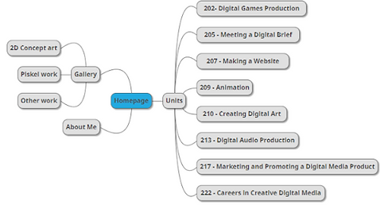
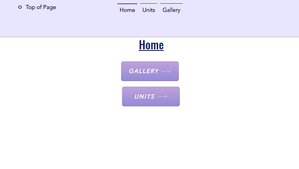
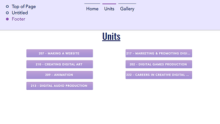
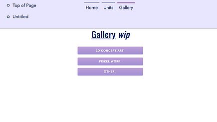
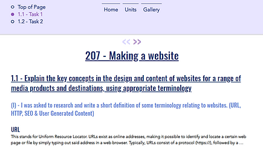
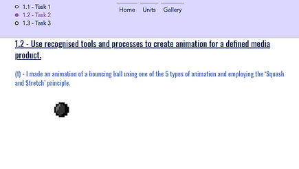
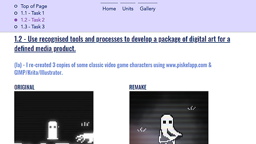
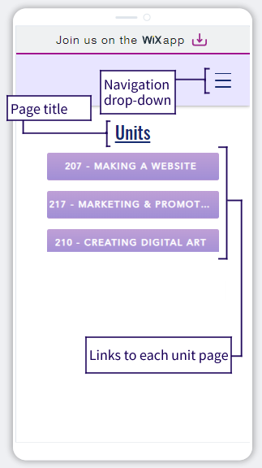
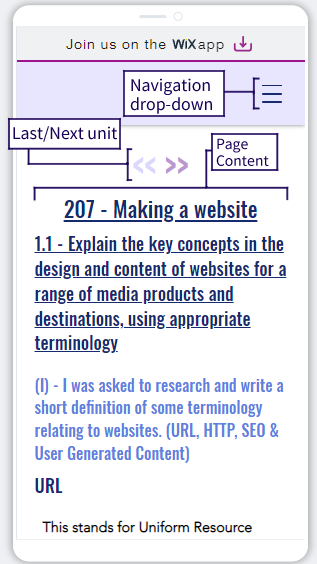

207 - Making a Website
Navigation
Key Concepts
(I) - Researching and defining some key terms relating to websites.
URL
This stands for Uniform Resource Locator. URLs exist as online addresses, making it possible to identify and locate a certain web page or file by simply typing out said address in a web browser. Typically, URLs consist of a protocol (https://), followed by a subdomain (www.), a domain and domain suffix (google.com) , any directories (/search/), and a web page (url.htm).
SEO
This stands for Search Engine Optimisation, which is a process of optimising the content, layout etc. of a website in order to ensure it places higher in search engine results and is more likely to be shown to a user, gaining more traffic in turn. It can involve use of things like keywords and relevant topics.
HTTP
This stands for Hypertext Transfer Protocol, a term that refers to the set of rules used for the transferring of files (eg: audio, video, images or text) over the internet. It appears at the start of most web addresses, particularly those on the Internet.
User Generated Content
This term refers to any form of online content, such as text, video, or images, that was created and uploaded by people (users); as opposed to content made by brands or companies, or content generated solely by a computer.
(II) - Comparing the features, purpose, and demographics of popular social media sites.
Facebook is a social media website and app owned by Meta. It was founded in February 2004 and initially was made for the sole demographic of Harvard University students, later including other U.S universities, and eventually becoming a global platform marketed towards everyone on earth, given they are over 13. More than half of its users are over 35, and its largest single age demographic is 25-34, making up an estimated 26% of users in 2021. Facebook’s primary purpose is sharing posts among friends or communities, and staying in contact with family, colleagues and friends. Some features Facebook has include the Facebook Marketplace, where users can sell or give away items to each other, and the ability to add different gestures instead of only “likes” under posts, giving more depth to post statistics. There are also Groups, spaces where users with a similar interest can discuss and make posts for specific communities rather than just friends or the general Facebook space.
Twitch
Twitch is a streaming platform owned by Amazon, targeted towards gaming communities. The target audience was originally solely gamers, with the only thing users could stream being video games, but there has since been some expansion into other categories, where users of the platform can now broadcast hosted events, music performance, live-vlog style content, and more; though gaming is still a large part of Twitch. Its audience has become more generalised, though a large majority of its users are young people in their teens and twenties. One of Twitch's main features besides being able to watch and create video livestreams is the live chat, where viewers of a channel can discuss using text and emotes, vote on polls for the stream, and sometimes earn virtual channel points that can be redeemed for bonuses determined by the streamer, or 'gambled' on predictions to help stay engaged. Additionally, streamers can benefit from the platform through receiving money from their audience, usually in the form of Twitch's own premium 'bits' donation system, or through paid subscriptions to their channel.
Snapchat
Snapchat is a messaging and social media platform designed for sharing photos and short videos, also called snaps. It was designed explicitly for mobile platforms from the start, with more focus on short form, temporarily available content such as the story feature where users can upload a picture or short video to their profile that disappears 24 hours after being posted. The app's direct messaging system even allows users to see when the other party has screenshotted or saved a message to prevent it disappearing after 24 hours, as well as change how long videos or images they send are viewable for. Snapchat appeals to users who enjoy an ephemeral style of content and casually keeping in contact with people such as through sending snaps back and forth through the streaks feature, along with a large portion of users who return to the app for its wide variety of filters. Its primary demographic is younger generations like Gen Z, with a large portion of its audience being under 18.
(III) - Researching and describing what characteristics might make for a good or bad website.
Good Website
- Clearly visible elements that are visually balanced with each other and serve a clear purpose
- High levels of contrast in text, such as black text on a white backdrop
- Simple and accessible site navigation (no dead ends/orphan pages)
- A consistent and appealing visual style that matches what the site represents
- Quick loading times
- Optimised for both mobile and desktop browsers
- Important information is given the most visual priority and can be easily found
- Utilises accessibility options such as alt text on important images
Bad Website
- Pages are cluttered or have different elements distracting from/obstructing each other
- Text that blends in with the background, such as white text on a yellow background
- Navigation that is unclear, hidden, over-complicated or otherwise difficult for users to access
- Visually unappealing or has an inconsistent style either with the site’s image, or from page-to-page
- Takes a long time to load
- Unoptimized or doesn’t function on mobile platforms
- No clear visual hierarchy/low-priority information is given more importance than things such as headers
- Doesn’t incorporate accessibility features, or does so inappropriately (inaccurate image descriptions, etc.)
Creating a Website
(I) - Making a site map for the pages, sub pages and navigation of my website.

low res because WixMoment_bottomtext.jpg and i lost the original but you get my drift
(II) - Taking screenshots of different pages on my website, and adding descriptions of the pages and what will be going on them.
Disclaimer - 10/05/24
This is the original website I had used at the time of completing Level 2, made using Wix. It was miserable to use and became un-editable during Level 3, so I switched to a completely different way of handling things, and the current site isn't laid out like this anymore.
Homepage

This is the home page. Its purpose in my website will be to serve as a jumping off point/introduction to the rest of the site; this is partially visible on the page, with links to the two main sections of the site, the gallery and units pages, but I also intend to add things like an introduction and different visual elements.
Units

This is the Units table of contents. Its purpose is to clearly display the different units and allow for fast navigation to specific topics. It has a button for each unit that links to their respective pages. I intend to change the layout of it somewhat, or fuse it with the homepage for simplicity, and add visual elements to better describe and distinguish the units.
Gallery

This is the gallery page. Like the units page, it contains a table of contents for different pages, this time for other work not related to the units. I intend to add personal projects and work here, as well as change this page so that instead of linking to different pages, it organises the different types of work like the different tasks in the unit pages, as navigable sections.
207 - Making a Website

This is the unit page for unit 207. It is part of the portfolio and contains the task prompts and some of the work done for this unit, organised by tasks. I intend to add the rest of this unit’s work as it is completed.
209 - Animation

This is the page for unit 209. It is a part of the portfolio and contains the task prompts for the unit and some of the work done such as written work and animations, organised by tasks. I intend to add the rest of this unit’s work as it is completed.
210- Creating Digital Art

This is the page for unit 210. It is another part of the portfolio and contains the task prompts and most of the work done such as the written work and image recreations, organised by tasks. I intend to add the rest of this unit’s work as it is completed.
(III) - Taking and annotating screenshots of different pages on my website in mobile view.
 
(IV) - Explaining how I decided to design my website and the website’s purpose.
When designing my website, I decided to go with as simple an idea as possible, using limited colours. This is because the site exists as a portfolio, and I wanted the content showcased on it to stand out and not be distracted from by a lot of visual or mental clutter from flashy visuals or confusing navigation. It’s also due to it being my first attempt at designing a website, so going for complicated things right away could be counter-intuitive and make the site harder to edit for mobile view, additional pages, etc. Some parts of the website I feel are redundant or overly complex still, however, and will simplify in the future to keep consistency.
I opted to use Wix primarily because of the limitations of Google Sites in organising content, and it’s relatively accessible so I don’t have to worry about spending ages learning a new site. I started the site from scratch for the same reason of simplicity in learning things and managing content; it’s harder to make a website if you don’t know what the things on it do or why. It’s additionally useful for the simple style, since I could add a limited colour palette instantly without clutter. The light purple-dark blue options were chosen because they’re gentle, subtle colours that don’t look generic but don’t irritate the eye or look too distracting, along with reflecting my own tastes.
I chose to contrast this by using a brighter blue shade on task prompts, and all caps, dark blue text for the titles of my work - this is intended to lead the eye towards the work being showcased, and create some visual interest in places where there aren’t any, like long text tasks.
Review
Peer Feedback
Navigation
Gives you choices to choose what topic you wanna go to which is very nice but there could be a search bar to find something faster if the viewer is trying to find something.
Colours
The theme is good, but it would also be nicer if you could add more theme options, like dark mode, although unsure if this is possible with Wix.
Fonts and Text Size
The fonts and text size is very good with size and spacing and using the right fonts. Easy to read with good separation between different sections of text.
Layout
The layout is nice and simple, there could be more stuff on the home page, like design, imagery of your work, maybe shortcuts for new things, but I know this user is using Wix therefore some of these features may not be possible, period.
Self Evaluation
I feel that I succeeded in making a website that is able to serve functionally as an online portfolio; though there is also room for improvement. The options for navigation are clearly displayed and accessible, and I was able to keep a reasonably consistent theme both in general visual style and in choosing appropriate fonts/text layouts. I managed to keep the layout simple while still displaying everything necessary for the portfolio, avoiding visual clutter without needing to cut anything out.
The home page ended up quite empty, which I think could be improved significantly by adding to it as the site develops further. The idea of displaying some work on the home page itself or adding in some shortcuts to newer work is good, and certainly worth looking into in the future; as with the possibility of some kind of search feature. There is also no dark mode (though this is not currently possible to implement with Wix), alt text for images, or functional mobile layout, all of which hinder the accessibility aspect to a degree, and should be considered more when further developing the website.